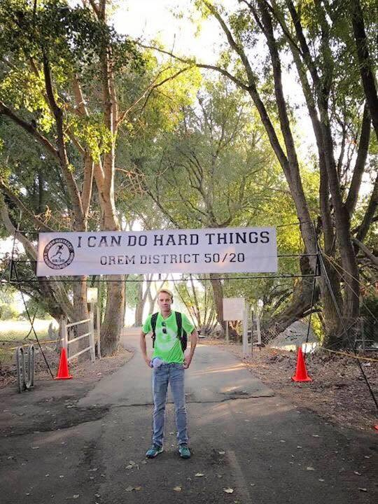
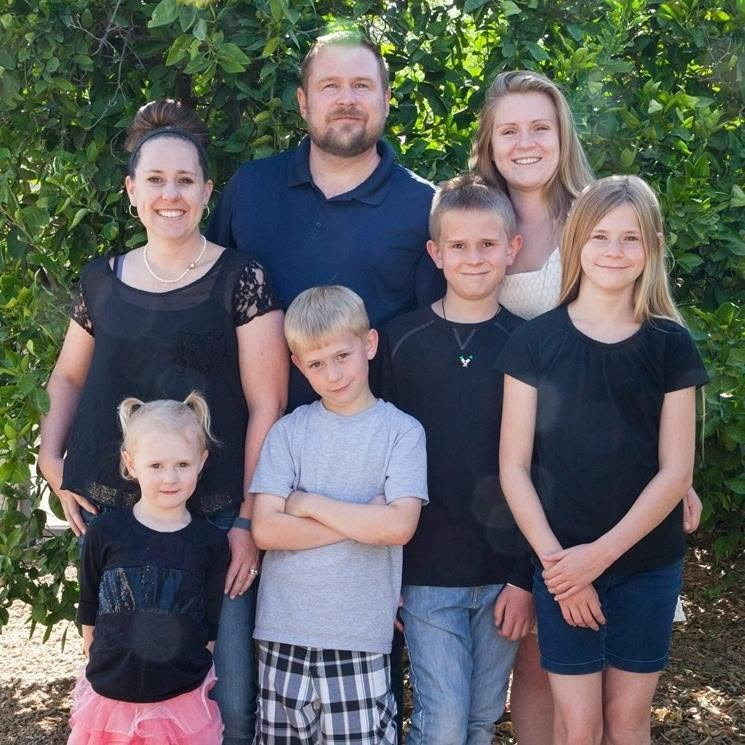

Journey Timeline
Taking on the Challenge: Running Across Arizona
From October 10th to October 18th, I am taking on the challenge to Run the State—a run across Arizona along the I-40 corridor from New Mexico to Nevada.
This journey is in memory of my son, Jefferson, who passed away during his senior year at Apollo High School on October 13, 2017, and my brother, David, who passed away on August 9, 2021.
Our family has deep roots at Apollo. Jefferson poured his heart into cross country, wrestling, choir, and Track & Field, specifically pole vault. David shared that exact same love for Apollo football, wrestling, drama, and choir.
On October 13th, the anniversary of Jefferson's passing, the plan is to pause the road run to hike the Grand Canyon in their honor.
Jefferson’s personal mantra was #icandohardthings. When he passed, our entire family took it on. To keep his spirit and their shared passions alive, we are asking for your support.
Want to join? You can join for part of the run! If you're interested in that, reach out and we can help facilitate getting you to and from, as long as you don't live too far away.


Support Apollo High School Programs
We are asking for donations directly to the Apollo High School Choir, Wrestling, Football, Cross Country, or Track & Field programs, or any program near and dear to your heart. Contributions are handled securely through the Glendale Union High School District Donation Page.
Go to Donation Page- Select Guest on the landing page
- Use the first dropdown to select Apollo High School
- Use the second dropdown to select your program of choice
- Enter the dollar amount you would like to contribute
- Crucial: Add "I can do hard things" to the memo line so we can track the impact of the run!
- Click the Buy button, then open your Cart
- Confirm your donation group and amount, and click Pay
Get a Shirt: To say thank you, anyone who makes a donation will receive a custom "I Can Do Hard Things" shirt featuring Jefferson's logo and mantra once the run is complete.
Thank you for helping us carry their legacy forward. 💙🦅
#RunTheState #icandohardthings #ApolloHawks #ApolloHighSchool #ArizonaRun